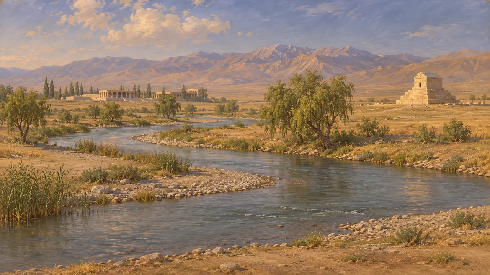
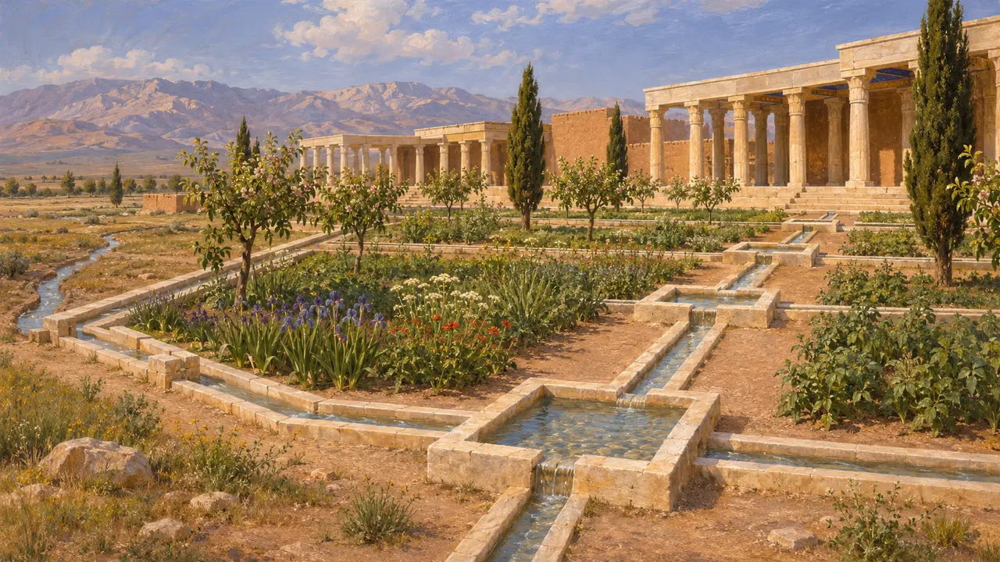
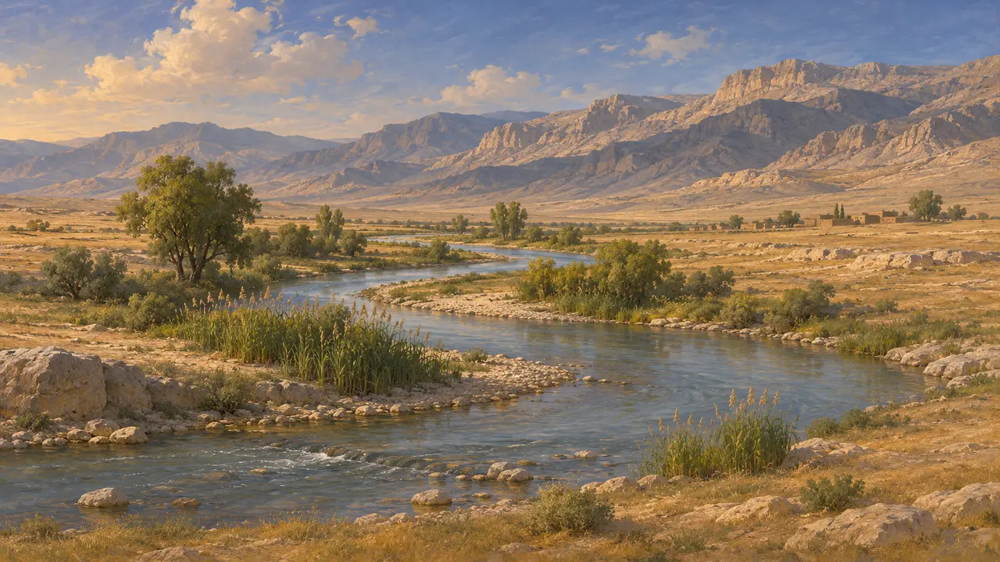
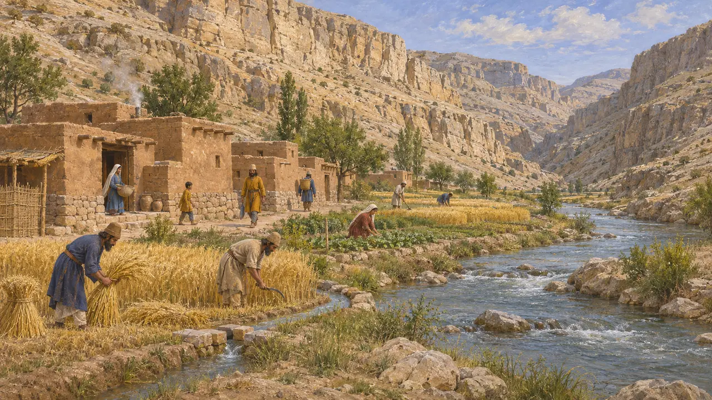

Der Fluss Pulvar
Fluss der Ebene von Pasargadae in der Persis, der nach Süden fließt und bei Persepolis in den Kur mündet
Der Pulvar durchfließt die Ebene von Pasargadae, bahnt sich durch eine enge Schlucht seinen Weg nach Süden und mündet unterhalb von Persepolis in der Ebene von Marvdascht in den Kur. Sein Wasser ermöglichte Ackerbau auf der hochgelegenen Ebene von Pasargadae und speiste wahrscheinlich die Steinkanäle im königlichen Garten des Kyros. Sowohl der erste persische Königssitz als auch der spätere in Persepolis lagen an seinem Lauf.
Im Spiel: Das Spiel zeigt, wie der Pulvar die Höfe der Ebene von Pasargadae bewässert, was im Großen und Ganzen zutrifft. Es vereinfacht das Bild: Tatsächlich gelangte das Flusswasser über gegrabene Kanäle zu Feldern und Gärten.

Ein Fluss durch das Herz der Persis
Zeitgenössisch belegtDer Pulvar entspringt in den Bergen nördlich von Pasargadae und fließt nach Süden durch die Ebene von Murghab, vorbei an den Überresten der Paläste und des Grabes des Kyros. Dann durchquert er die Schlucht Tang-i Bulaghi und erreicht die Ebene von Marvdascht. Dort fließt er an Istachr und Naqsch-e Rostam vorbei und trifft südlich der Terrasse von Persepolis auf den größeren Kur. Pulvar ist ein moderner Name; der achämenidische Name des Flusses ist nicht sicher bekannt.
D. Stronach, Pasargadae, 1978

Wasser für den Garten des Kyros
Zeitgenössisch belegtStronach grub den Palastbereich von Pasargadae aus und fand schmale Kalksteinrinnen entlang der Ränder eines Ziergartens, in regelmäßigen Abständen mit kleinen quadratischen Becken versehen. Das Wasser stammte wohl aus dem Flusssystem der Ebene. Die Rinnen zeigen, dass der Garten und die Umgebung der Paläste um eine geregelte Wasserversorgung herum geplant wurden.
D. Stronach, Pasargadae, 1978

Wie die Griechen es nannten
UmstrittenStrabon nennt einen Fluss Kyros, der nahe Pasargadae durch die Persis floss, und einen Fluss Medos, der bei Persepolis in den Araxes mündete. Bei Arrian überquert Alexander den Araxes auf seinem Weg nach Persepolis. Der Kur gilt gemeinhin als der Araxes, während der Pulvar sowohl mit Strabons Kyros als auch mit seinem Medos gleichgesetzt wurde. Keine dieser Zuordnungen ist gesichert.
Strabo 15.3.6; Arrian, Anabasis 3.18

Die Schlucht und der moderne Staudamm
Zeitgenössisch belegtBevor der Sivand-Staudamm am Pulvar in den 2000er-Jahren das Tal zu fluten begann, führten iranische und ausländische Teams in der Schlucht Tang-i Bulaghi Rettungsgrabungen durch. Sie dokumentierten Siedlungen und andere Überreste aus achämenidischer Zeit entlang des Flusses. Diese Arbeiten legen nahe, dass das Tal zwischen Pasargadae und Persepolis in persischer Zeit bewirtschaftet und bewohnt war und nicht bloß durchquert wurde.
Reports of the Tang-i Bulaghi rescue excavations, partly published in ARTA
Quellen
- D. Stronach, Pasargadae, 1978
- Strabo 15.3.6
- Arrian, Anabasis 3.18
- Reports of the Tang-i Bulaghi rescue excavations, partly published in ARTA
- P. Briant, From Cyrus to Alexander, 2002